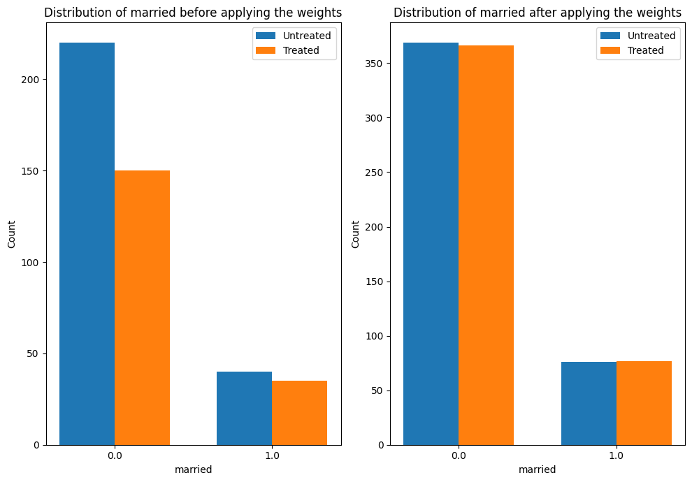

DoWhy example on the Lalonde dataset#
Thanks to @mizuy for providing this example. Here we use the Lalonde dataset and apply IPW estimator to it.
1. Load the data#
[1]:
import dowhy.datasets
lalonde = dowhy.datasets.lalonde_dataset()
2. Run DoWhy analysis: model, identify, estimate#
[2]:
from dowhy import CausalModel
model=CausalModel(
data = lalonde,
treatment='treat',
outcome='re78',
common_causes='nodegr+black+hisp+age+educ+married'.split('+'))
identified_estimand = model.identify_effect(proceed_when_unidentifiable=True)
estimate = model.estimate_effect(identified_estimand,
method_name="backdoor.propensity_score_weighting",
target_units="ate",
method_params={"weighting_scheme":"ips_weight"})
print("Causal Estimate is " + str(estimate.value))
import statsmodels.formula.api as smf
reg=smf.wls('re78~1+treat', data=lalonde, weights=lalonde.ips_stabilized_weight)
res=reg.fit()
res.summary()
Causal Estimate is 1639.8164903721117
[2]:
| Dep. Variable: | re78 | R-squared: | 0.015 |
|---|---|---|---|
| Model: | WLS | Adj. R-squared: | 0.013 |
| Method: | Least Squares | F-statistic: | 6.743 |
| Date: | Sat, 25 Oct 2025 | Prob (F-statistic): | 0.00972 |
| Time: | 10:43:16 | Log-Likelihood: | -4544.7 |
| No. Observations: | 445 | AIC: | 9093. |
| Df Residuals: | 443 | BIC: | 9102. |
| Df Model: | 1 | ||
| Covariance Type: | nonrobust |
| coef | std err | t | P>|t| | [0.025 | 0.975] | |
|---|---|---|---|---|---|---|
| Intercept | 4555.0731 | 406.705 | 11.200 | 0.000 | 3755.763 | 5354.383 |
| treat[T.True] | 1639.8165 | 631.496 | 2.597 | 0.010 | 398.717 | 2880.916 |
| Omnibus: | 303.264 | Durbin-Watson: | 2.085 |
|---|---|---|---|
| Prob(Omnibus): | 0.000 | Jarque-Bera (JB): | 4770.671 |
| Skew: | 2.709 | Prob(JB): | 0.00 |
| Kurtosis: | 18.097 | Cond. No. | 2.47 |
Notes:
[1] Standard Errors assume that the covariance matrix of the errors is correctly specified.
3. Interpret the estimate#
The plot below shows how the distribution of a confounder, “married” changes from the original data to the weighted data. In both datasets, we compare the distribution of “married” across treated and untreated units.
[3]:
estimate.interpret(method_name="confounder_distribution_interpreter",var_type='discrete',
var_name='married', fig_size = (10, 7), font_size = 12)
/home/runner/work/dowhy/dowhy/dowhy/interpreters/confounder_distribution_interpreter.py:86: FutureWarning: The provided callable <function sum at 0x7f9a24184160> is currently using SeriesGroupBy.sum. In a future version of pandas, the provided callable will be used directly. To keep current behavior pass the string "sum" instead.
barplot_df_after = df.groupby([self.var_name, treated]).agg({"weight": np.sum}).reset_index()

4. Sanity check: compare to manual IPW estimate#
[4]:
df = model._data
ps = df['propensity_score']
y = df['re78']
z = df['treat']
ey1 = z*y/ps / sum(z/ps)
ey0 = (1-z)*y/(1-ps) / sum((1-z)/(1-ps))
ate = ey1.sum()-ey0.sum()
print("Causal Estimate is " + str(ate))
# correct -> Causal Estimate is 1634.9868359746906
Causal Estimate is 1639.8164903721135